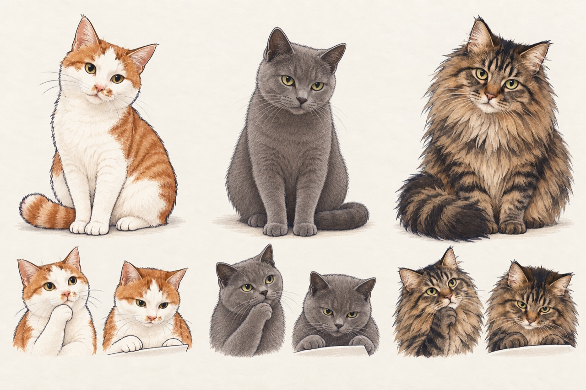
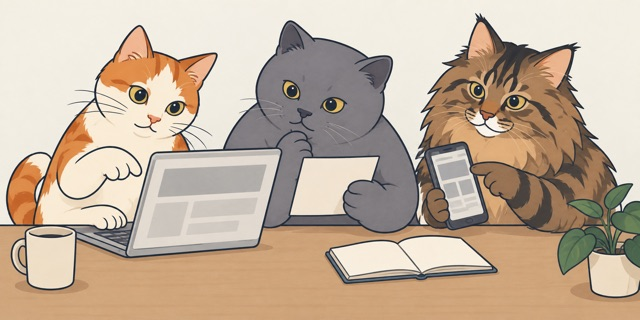
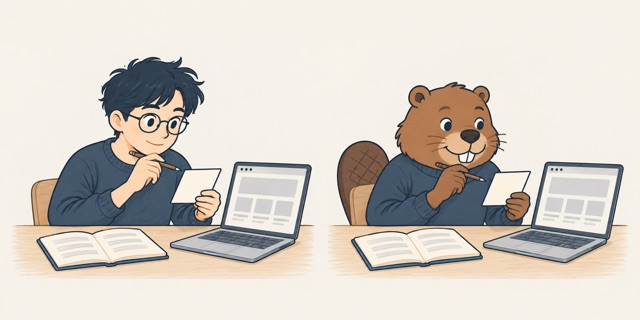

课程角色试验
先看三只猫是否保留了各自特征，再比较它们进入项目场景后的效果
2026-10-07 · 沿用细节版画风，按补充照片修正蓝猫体型与腮部 · 名字、性格与分工待讨论
三只猫 · 外形与表情



橘白
白色面部中线、胸口与爪子，橘色头顶、背部与尾巴
蓝猫
纯蓝灰短毛、较小的腮部与自然体型；按补充照片修正比例
长毛狸花
额头与脸颊条纹、蓬松颊毛、胸毛和大尾巴
此前的场景试验 · 一起核对页面

三只猫可以组成角色库。章首章末先用一只主角，反馈或审查场景按需要加入另一只；三只同场用于比较群像效果，使用频率另行决定
另一条方向 · 简化人物与小海狸

本轮使用内置 image_gen 生成。原始照片完整留存在本地 Git 忽略目录，公开页面只引用生成素材；最终 Prompt 和制作说明见 制作记录